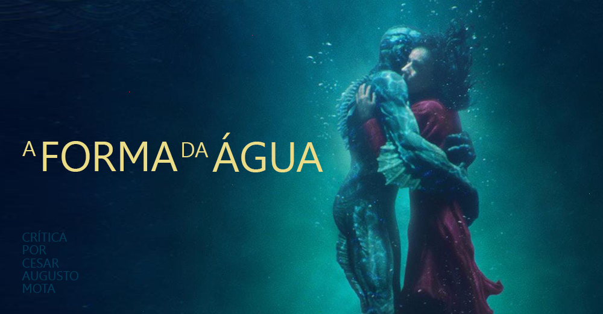

Aqui vai uma pequena lista dos meus 5 filmes preferidos
5: Bastardos Inglórios
Durante a Segunda Guerra Mundial, na França, judeus americanos espalham o terror entre o terceiro Reich. Ao mesmo tempo, Shosanna, uma judia que fugiu dos nazistas, planeja vingança quando um evento em seu cinema reunirá os líderes do partido.
4: Cisne Negro
Uma bailarina perde a compreensão da realidade quando uma sensual bailarina ameaça sua posição de dançarina protagonista em "O Lago dos Cisnes".
3: A Forma da Água
Década de 60. Em meio aos grandes conflitos políticos e transformações sociais dos Estados Unidos da Guerra Fria, a muda Elisa, zeladora em um laboratório experimental secreto do governo, se encanta com uma criatura fantástica mantida presa e maltratada no local. Para executar um arriscado e apaixonado resgate, ela recorre ao melhor amigo Giles e à colega de turno Zelda, em uma aventura que pode custar muito mais do que o seu emprego.
2: Interestelar

As reservas naturais da Terra estão chegando ao fim e um grupo de astronautas recebe a missão de verificar possíveis planetas para receberem a população mundial, possibilitando a continuação da espécie. Cooper é chamado para liderar o grupo e aceita a missão sabendo que pode nunca mais ver os filhos. Ao lado de Brand, Jenkins e Doyle, ele seguirá em busca de um novo lar.
1: Forrest Gump

Mesmo com o raciocínio lento, Forrest Gump nunca se sentiu desfavorecido. Graças ao apoio da mãe, ele teve uma vida normal. Seja no campo de futebol como um astro do esporte, lutando no Vietnã ou como capitão de um barco de pesca de camarão, Forrest inspira a todos com seu otimismo. Mas a pessoa que Forrest mais ama pode ser a mais difícil de salvar: seu amor de infância, a doce e perturbada Jenny.